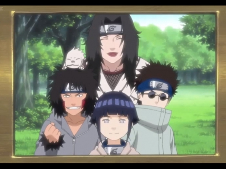
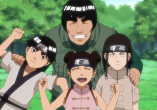
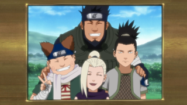

Team 7
 Team 7 was a Konohagakure team formed
under the leadership of Kakashi Hatake. Two-and-a-half years after Sasuke Uchiha left the village, Kakashi
filled out paperwork to form Team Kakashi, with his former pupils Naruto Uzumaki and Sakura Haruno now being
treated as equals alongside their teacher. Following Yamato and Sai joining the team, the group went by Team
Yamato during the former's leadership. Naruto, Sasuke, and Sakura are organised into a team following their
graduation from the Academy in order to balance out their talents: Naruto, the worst student in his class, would
benefit from Sakura's intelligence and Sasuke's proficiency with ninjutsu; Sakura would benefit from her more
battle-capable teammates; Sasuke would benefit from being forced to work with others. Kakashi is selected to
lead them in order to keep an eye on Naruto, Nine-Tails' jinchūriki and, in the anime, to help Sasuke cope with
life after the Uchiha Clan Downfall, and as well to develop his Sharingan. As with all the previous genin teams
he was put in charge of, Kakashi gives them a bell test in order to determine if they give the proper importance
to teamwork. Unlike all previous genin teams, Naruto, Sasuke, and Sakura pass the test.
Team 7 was a Konohagakure team formed
under the leadership of Kakashi Hatake. Two-and-a-half years after Sasuke Uchiha left the village, Kakashi
filled out paperwork to form Team Kakashi, with his former pupils Naruto Uzumaki and Sakura Haruno now being
treated as equals alongside their teacher. Following Yamato and Sai joining the team, the group went by Team
Yamato during the former's leadership. Naruto, Sasuke, and Sakura are organised into a team following their
graduation from the Academy in order to balance out their talents: Naruto, the worst student in his class, would
benefit from Sakura's intelligence and Sasuke's proficiency with ninjutsu; Sakura would benefit from her more
battle-capable teammates; Sasuke would benefit from being forced to work with others. Kakashi is selected to
lead them in order to keep an eye on Naruto, Nine-Tails' jinchūriki and, in the anime, to help Sasuke cope with
life after the Uchiha Clan Downfall, and as well to develop his Sharingan. As with all the previous genin teams
he was put in charge of, Kakashi gives them a bell test in order to determine if they give the proper importance
to teamwork. Unlike all previous genin teams, Naruto, Sasuke, and Sakura pass the test.
Team 8
Team Kurenai, also known as Team 8, was
a ninja team led by Kurenai Yūhi. Its members are Kiba Inuzuka, his ninken Akamaru, Hinata Hyūga, and Shino
Aburame. The team specialises in tracking and locating through the use of the Hyūga clan's Byakugan, the Aburame
clan's bugs, and the Inuzuka clan's dogs as well as Kiba's own heightened sense of smell. When Kurenai became
pregnant in Part II, Kakashi Hatake took over as the squad leader on some of their missions.Along with the other
members of the Konoha 11, Team 8 had regrettably decided to personally kill Sasuke Uchiha in order to stop him
from sinking any lower as a missing-nin and risk causing a devastating international war as a result, but were
persuaded by Naruto Uzumaki that he alone will take care of it.
Team Guy
Team Guy was a team led by Might
Guy and was formed a year before the other main Konoha teams of the series. They specialise in close-quarters
combat with all of its members using some sort of physical attacks. Guy waited a year before entering them in
the Chūnin Exams, though none of his apprentices were promoted at that time.
Later, between the events of Parts I and II, Rock Lee and Tenten became chūnin while Neji Hyūga surpassed his
teammates and rose to the ranks of jōnin. Despite becoming more busy, Neji still goes on missions with his team.
Along with the other members of the Konoha 11, Team Guy regrettably had decided to kill Sasuke Uchiha personally
in order to prevent war between Konoha and Kumogakure or/and any of the other major nations, but were persuaded
by Naruto Uzumaki that he would deal with Sasuke alone.
Team 10
Team Asuma, also known as Team 10, is
a generation in the Ino–Shika–Chō Trio (いの しか ちょうトリオ, Ino–Shika–Chō Torio). As such, the three team members are
good friends and have exceptional team work, although they tend to bicker from time to time. All three members
of Team 10 are skilled at stalling opponents. They were led by Asuma until his death in Part II. Kakashi led
them temporarily after that to help them avenge Asuma's death. The team is assumed to still be active, although
without a permanent leader.
During the time-skip in the anime, for the second Chūnin Exams, Sakura temporarily joined the team (whose other
teammates were not in the village), as a team of three is required. Asuma placed Shikamaru in charge, having
already become a chūnin.
>Home Page